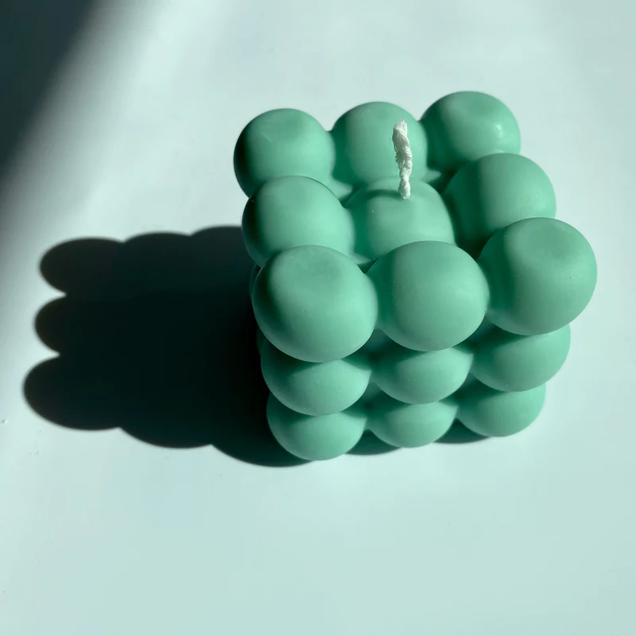
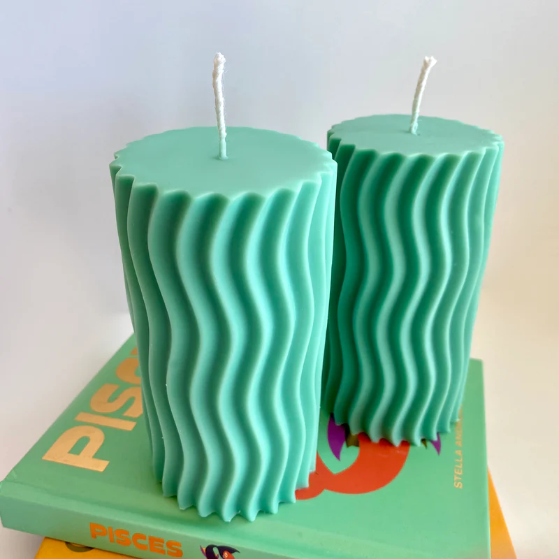

Velas hechas a mano en lotes pequeños con cera de soja natural.
Hecho con amor en Punta del Este, Uruguay.
 
Suscribite a nuestro boletín
Sé el primero en enterarse de nuevos diseños de velas, reposiciones y descuentos.